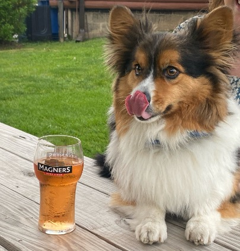

Wrigley Dog Sitting

About
- Sex: M
- Breed: Pembroke Welsh Corgi
- Color: Tricolor
- Birthday: 03/16/2020
- Microchip: 956000012570863
- Neutered: Yes
📞 Contact Information
- Kelsey: (630) 400-5971
- Nick: (847) 845-9953
- Address: 4034 Pompton Ct, Elgin, IL 60124
⚕️ Vet Information
- Cleveland Veterinary Clinic
- Phone: (847) 697-4066
- 400 N McLean Blvd, South Elgin, IL 60177
🍗 Food
- Twice a day: Before morning walk and ~5pm
- One scoop (1/3 Cup) w/small amount of whipped cream
{kind=link}
🍎 Treats (few per day)
- Ice cubes
- Chunks of cheese
- Dog Ice Cream
- Blueberry yogurt
- Hot Dog
- Pupperoni (Rope ball or sniffle mat)
{kind=link}
☠️ Toxic Foods
- Chocolate
- Avocados
- Grapes/Raisins
- Garlic/Onions
- Jalapeño/Spices
🦮 Walks
- 7:00 AM walks
- Approx. 2 mile before he gets tired
- Understands “Wait” and “Let’s Cross”
Pay close attention at crosswalks so he does not wonder into traffic
- Expect him to resist at the start of the walk, but he’ll cooperate once you get going
🧻 Potty Schedule
- Twice a day (at least)
- Morning walk
- In the evening after dinner
- Putting him in his harness is a game for him → He will run away so you have to chase him
- Has gone 8 hours in between potty breaks before
- Extra poop bags are in the coat closet across from the kitchen table
🗣️ Commands
- Sit / Lay Down
- Up / Off
- Speak
- Touch (the bells)
- Wait
- Drop
- Kisses
- Paw
- High Five!
- Roll Over (where he falls to his side)
- Are you…
- hungry?
- Do you…
- have to go potty?
- want to go outside?
- want to go for a walk?
- want food?
- want a treat?
- want cuddles?
- want scratches?
- want to go to bed?